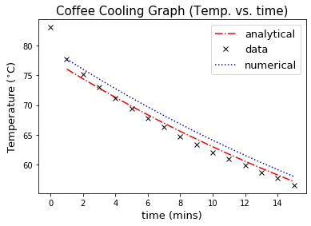

#---------------------------------------------------------------------------------
#Coffee cup cooling problem
#Name: Jasmine Kobayashi
#Lab partner:
#Date: 1/23/20
#---------------------------------------------------------------------------------
#import necessary modules
import numpy as np
import matplotlib.pyplot as plt
#Define constants and initialize variables---------------------------------------------------------------------------------
def radi(m,h): #Radius;calculated using estimated mass and height (in case want to change est. mass and height)
return (m/(np.pi*h))**(1/2)
m = 0.354 #m = est. mass, in liters or kilograms (1 liter= 1 kilogram)
h = 0.10 #h = est. height, in meters
def Sur_A(h): #Surface Area function; calculated using est. mass and calculated radius
return 2*radi(m,h)*h+2*np.pi*radi(m,h)**2
def delta_x(m): #Delta x function; using est. mass & height (includes above radi & SA functions)
return (0.0237*Sur_A(h))/(R_cnst(T1,T2,t1,t2,Ts)*m*4.19e3) #Uses thermal cond. k=0.0237 (W/m deg.C) and specific heat of water C=4.19e3 (J/kg deg.C)
def R_cnst(T1,T2,t1,t2,Ts): #function for constant R calculated from experimental data
return -(T2-T1)/((t2-t1)*(T2-Ts))
T1 = 66.4 #T1 = T^n
T2 = 67.8 #T2 = T^n-1 (or the temp before T1; the warmer temperature)
t1 = 7 #t1 = time for T^n
t2 = 6 #t2 = time for T^n-1 (or the time before t1)
def Analy_soln(time,T0,R,Ts): #Analytical solution, function copied from cooling notes
return (T0-Ts)*np.exp(-R*time)+Ts
Ts = 22.0 #outside temperature (degrees C)
T0 = 77.7 #initial coffee temperature (degrees C)
R = R_cnst(T1,T2,t1,t2,Ts) #cooling rate in min^-1 (using calculated R constant from data)
time = np.arange(1,16,1)
#Add experimental data-----------------------------------------------------------------------------------------------------
T= [83.0,77.7, 75.1, 73.0, 71.1, 69.4, 67.8, 66.4, 64.7, 63.4, 62.1, 61.0, 59.9, 58.7, 57.8, 56.6] #Temperature Data
t = np.arange(0,16,1) #Time, 0 to 15 (min) with 1 step intervals
#Construct a time stepping loop to solve the ODE using the Euler algorithm-------------------------------------------------
def numerical_soln(T0,Ts,R,dt): #Numerical solution. Pretty much copied from the cooling notes.
return T0-R*(T0-Ts)*dt
dt = time[1]-time[0]
Temp = []
Temp.append(T0)
Tinit=T0
for i in range(1,len(time)):
tmp = numerical_soln(Tinit,Ts,R,dt)
Temp.append(tmp)
Tinit = tmp
#Print statements---------------------------------------------------------------------------------------------------------
print ('R constant from data:',R_cnst(T1,T2,t1,t2,Ts), "min^-1")
print ('Calculated delta x=', delta_x(m),'meters')
#Plot results-------------------------------------------------------------------------------------------------------------
plt.plot(time,Analy_soln(time,T0,R,Ts),'r-.',label = 'analytical') #red = analytical
plt.plot(t,T,'kx', label = 'data') #yellow = data
plt.plot(time,Temp,'b:', label='numerical') #blue + = numerical
plt.title('Coffee Cooling Graph (Temp. vs. time)',fontsize = 15)
plt.xlabel('time (mins)',fontsize=13)
plt.ylabel('Temperature ($^{\circ}$C)',fontsize=13)
plt.legend(fontsize=13)
plt.show()R constant from data: 0.030567685589519465 min^-1
Calculated delta x= 0.0038118273798025334 meters